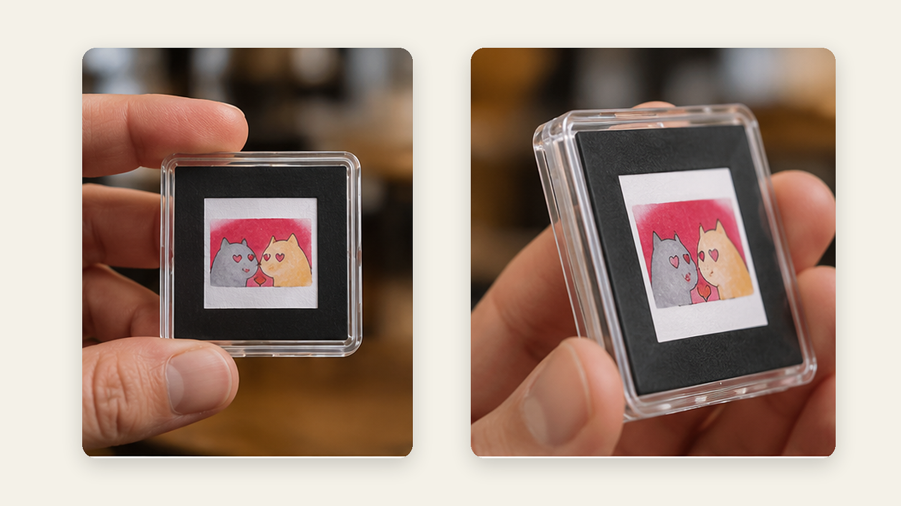

Privacidad y Seguridad
Qué puede confirmar la plataforma y nociones básicas de seguridad para tu cuenta y tu pieza física.
Qué confirma la plataforma
La plataforma confirma el estado de propiedad digital y la actividad asociada a tu cuenta y a tus GRAMs.
La pieza física sigue importando
La pieza física sigue siendo importante en las interacciones del mundo real. La plataforma confirma el estado digital, pero la entrega de la pieza debe gestionarse entre las personas implicadas.
Protección contra el uso indebido
Cada GRAM solo puede reclamarse una vez. Los beneficios son aprobados por los equipos partners, que comprueban la pieza física; los tiempos de espera evitan usos repetidos.
Información almacenada
Solo guardamos el ID de cuenta para vincular GRAMs, las GRAMs que posees y los registros de uso de beneficios. El sistema GRAM no guarda tarjetas ni datos de pago.
Información que no almacenamos
No rastreamos tu ubicación, no hacemos lecturas NFC en segundo plano, no accedemos al teléfono más allá del toque ni recopilamos datos personales de navegación.
Tu responsabilidad
Guarda bien la pieza física, no compartas fotos como prueba de propiedad y llévala al usar beneficios. Las GRAMs perdidas o dañadas pueden no tener reemplazo.
Guía visual
